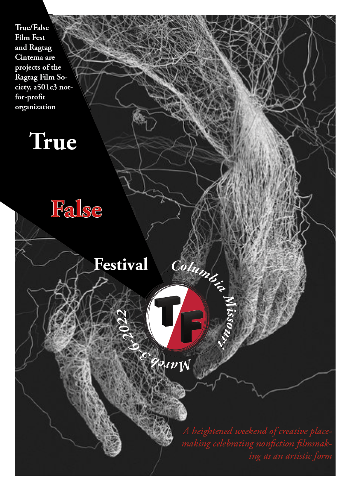
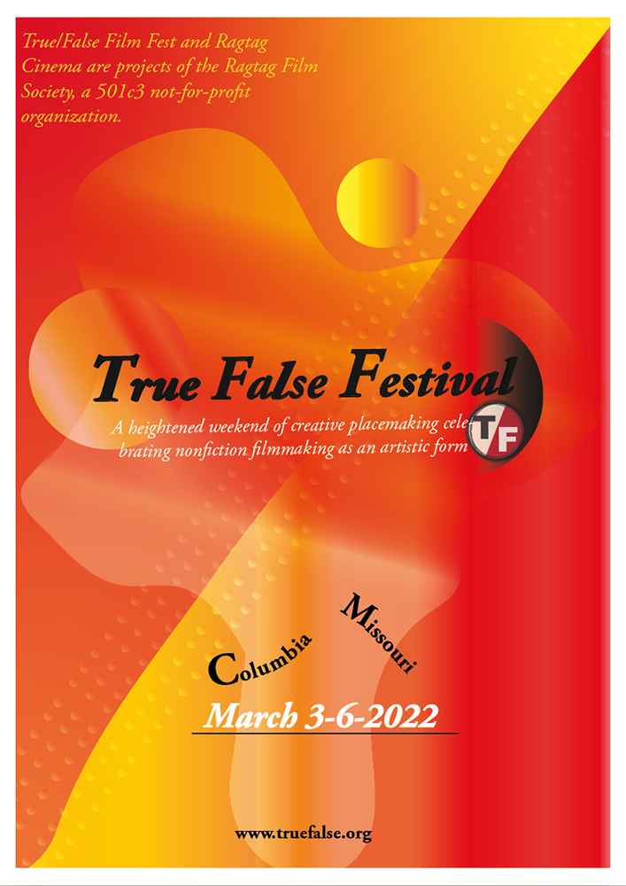
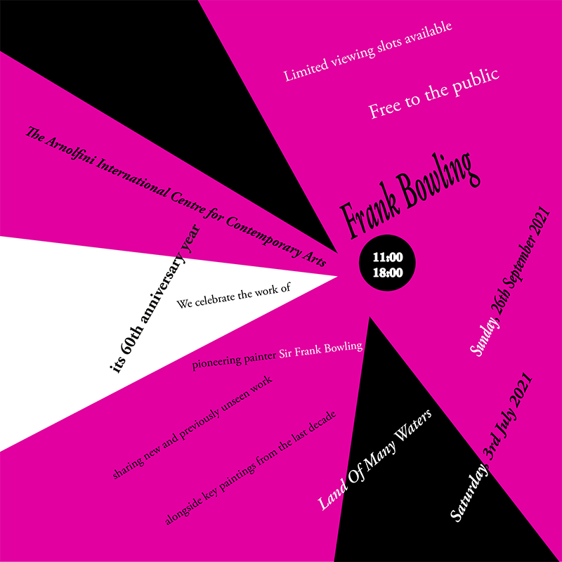
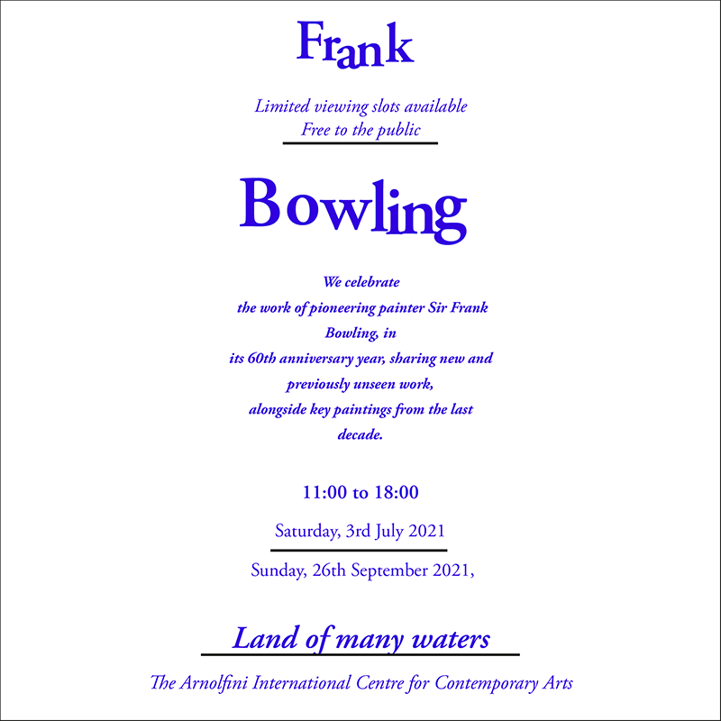
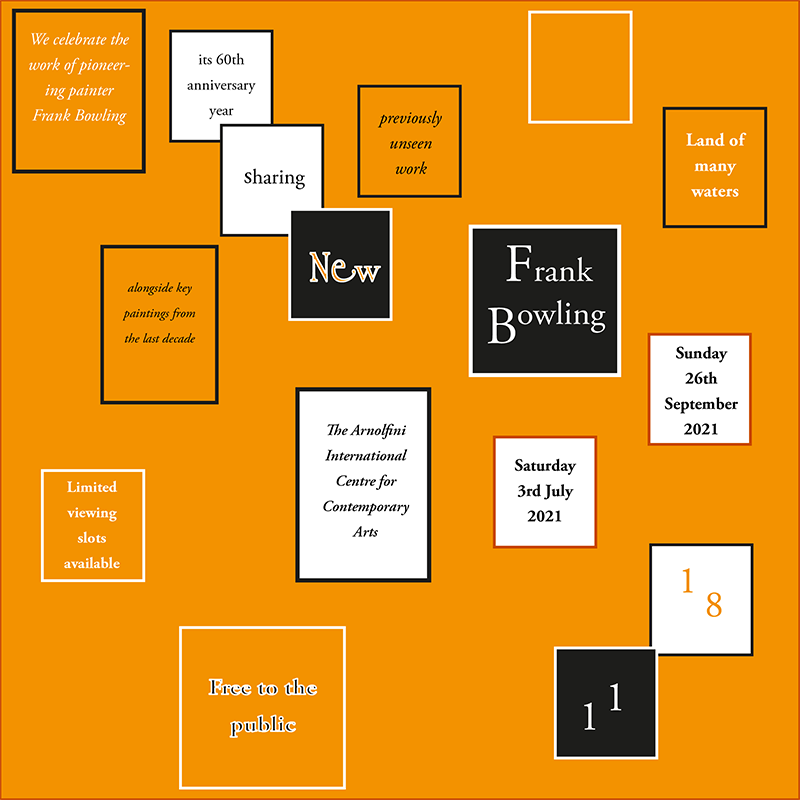

CARP TASK
poster reflection
True/False poster1
uuuyfgnvhbggn
True/False poster2
uuuyfgnvhbggn
True/False poster3

uuuyfgnvhbggn
UX TASK
Scope and strategy website
The strategy of a website is mainly based on two items: website objectives and user needs. The first step to creating a website is defining its website's objective. There are many objectives for my website. First of all, it is a place to put all my works of the graphic and design studio module on, so I would like to get a good mark on this subject. Secondly, this website is a marketing tool for me. I mean, In here, I have planned to the public all my designs as a public portfolio that will send to my teachers and my future employers to internship, interview, and get a well-paid job. Therefore, my goal is to meet users' goals to evaluate my ability and skills for their purposes. Furthermore, it is my first website, so I have used it to practice to have a deeper understanding of this module. Thanks to this, I can get a sense of satisfaction and enjoy this progress. Finally, it reflects my process in class. Part two of the strategic plan is to identify who are users and their needs. The first class of my users that I would like to mention is my teacher. They are Mary Jackson( lecturer ) and Tom( tutor), and my program leader. Moreover, I want to send this web to my classmates because I think they will give me a lot of feedback to help me improve my skills and correct my mistakes. I also want to introduce it to my family and my friends. Importantly, this website will be sent to my potential employers as a public portfolio when I interview or apply for a job in the future. In terms of website scope, I will break it into two parts: functionality and content. So what I want my website to do. It includes webpages, links to other pages, easy navigation, a usable interface, flexible items and buttons. I want my website to present all information and choices. Now I will talk about the content of my website. It has specific content like my information, assignments of UX, design, typography and coding task and reflective report. Moreover, I would put other information related to my contacts and other projects.
Flowchart
In terms of website scope, I will break it into two parts: functionality and content. So what I want my website to do. It includes webpages, links to other pages, easy navigation, a usable interface, flexible items and buttons. I want my website to present all information and choices. Now I will talk about the content of my website. It has specific content like my information, assignments of UX, design, typography and coding task and reflective report. Moreover, I would put other information related to my contacts and other projects.
TYPE TASK
Axial

reflection 2-3 sentences The strategy of a website is mainly based on two items: website objectives and user needs. The first step to creating a website is defining its website's objective. There are many objectives for my website. First of all, it is a place to put all my works of the graphic and design studio module on, so I would like to get a good mark on this subject. Secondly, this website is a marketing tool for me. I mean, In here, I have planned to the public all my designs as a public portfolio that will send to my teachers and my future employers to internship, interview, and get a well-paid job. Therefore, my goal is to meet users' goals to evaluate my ability and skills for their purposes. Furthermore, it is my first website, so I have used it to practice to have a deeper understanding of this module. Thanks to this, I can get a sense of satisfaction and enjoy this progress. Finally, it reflects my process in class. Part two of the strategic plan is to identify who are users and their needs. The first class of my users that I would like to mention is my teacher. They are Mary Jackson( lecturer ) and Tom( tutor), and my program leader. Moreover, I want to send this web to my classmates because I think they will give me a lot of feedback to help me improve my skills and correct my mistakes. I also want to introduce it to my family and my friends. Importantly, this website will be sent to my potential employers as a public portfolio when I interview or apply for a job in the future. In terms of website scope, I will break it into two parts: functionality and content. So what I want my website to do. It includes webpages, links to other pages, easy navigation, a usable interface, flexible items and buttons. I want my website to present all information and choices. Now I will talk about the content of my website. It has specific content like my information, assignments of UX, design, typography and coding task and reflective report. Moreover, I would put other information related to my contacts and other projects.
Radial

reflection 2-3 sentences
Dilatational
 (1)-01.png)
reflection 2-3 sentences
Grids

reflection 2-3 sentences
Random
reflection 2-3 sentences
Transitional
reflection 2-3 sentences
Bilateral
reflection 2-3 sentences
Modular
reflection 2-3 sentences
Coding TASK
I put all the klinl
Worksheet 1
uuuyfgnvhbggn